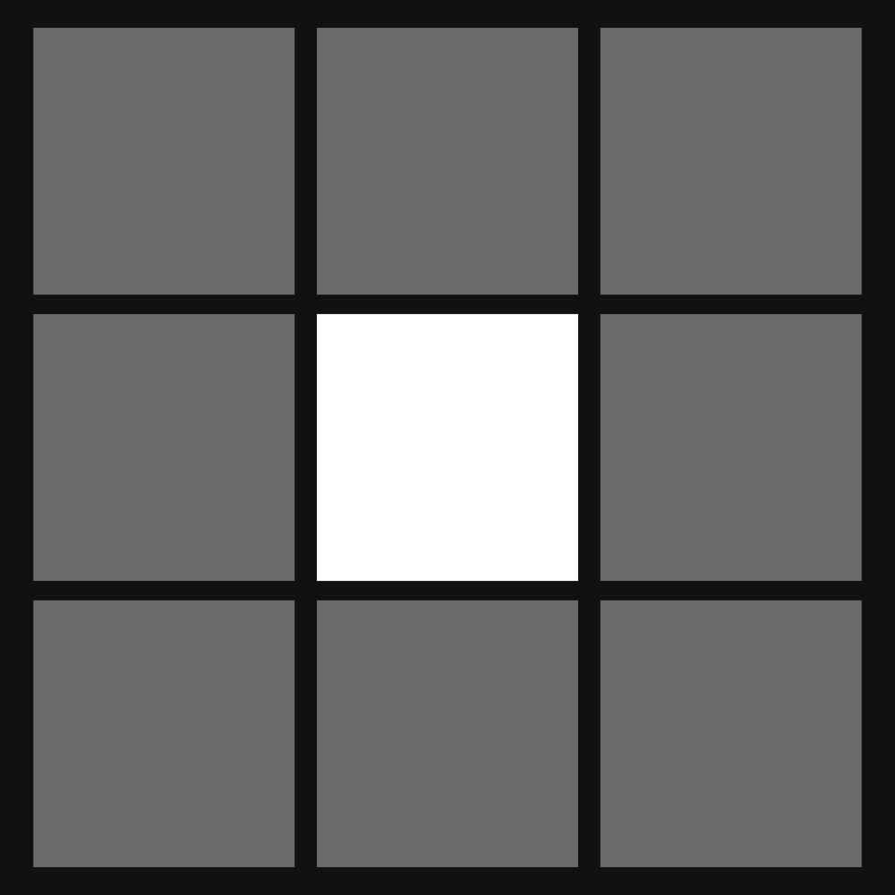
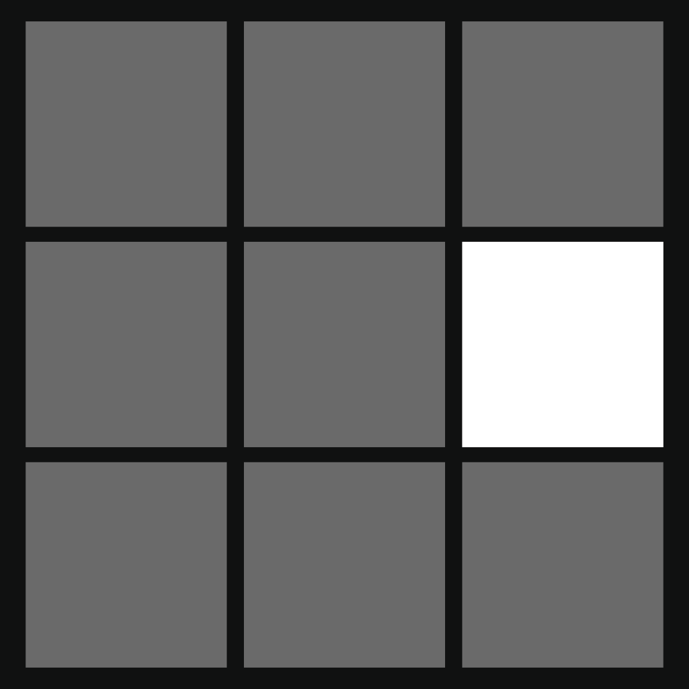
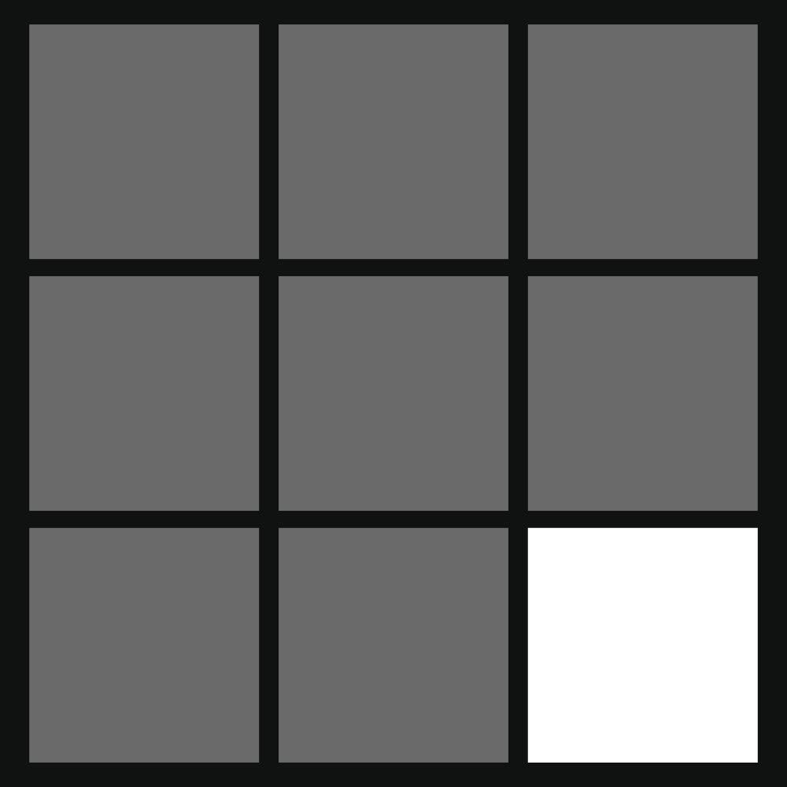
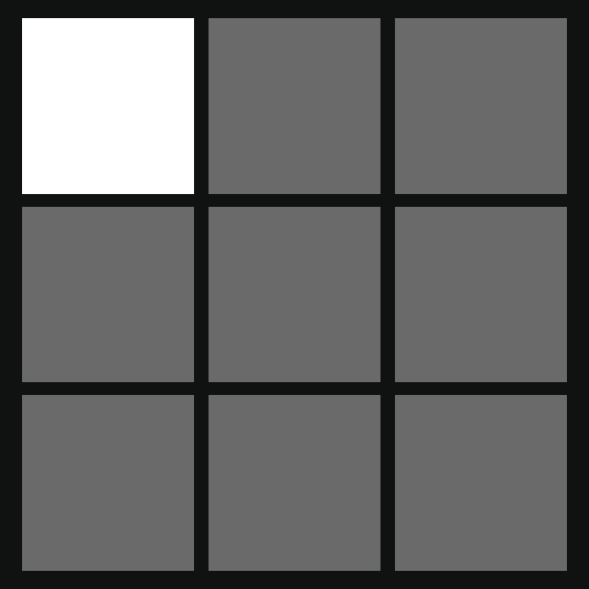
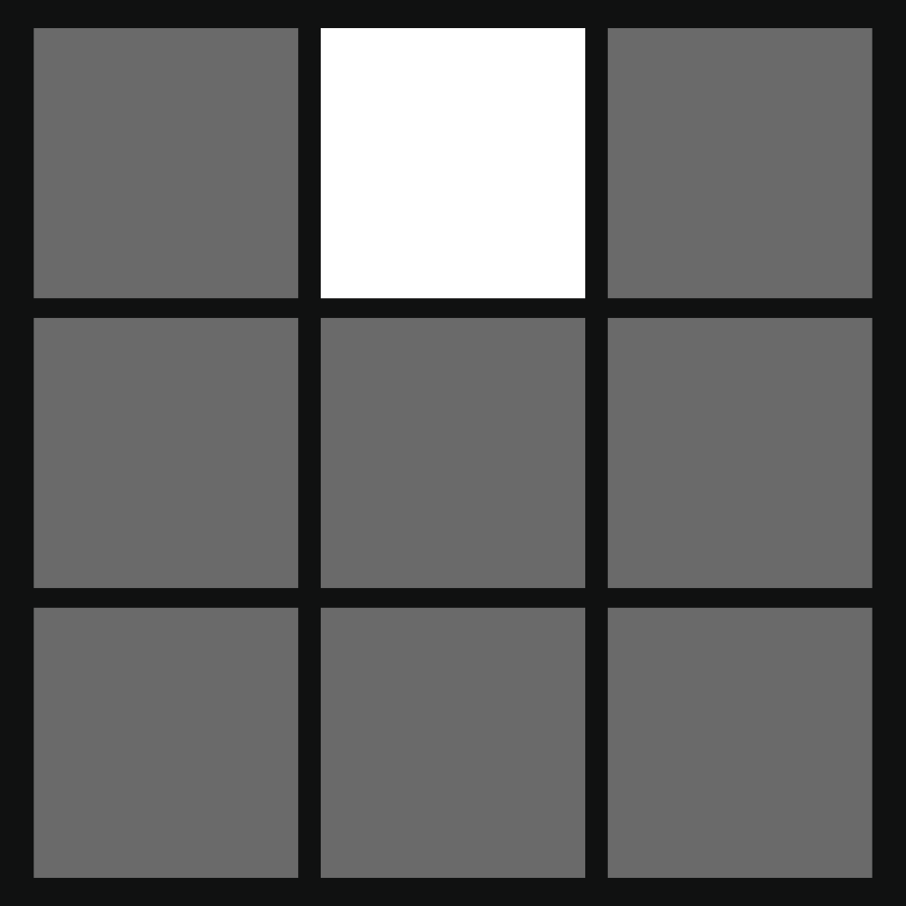
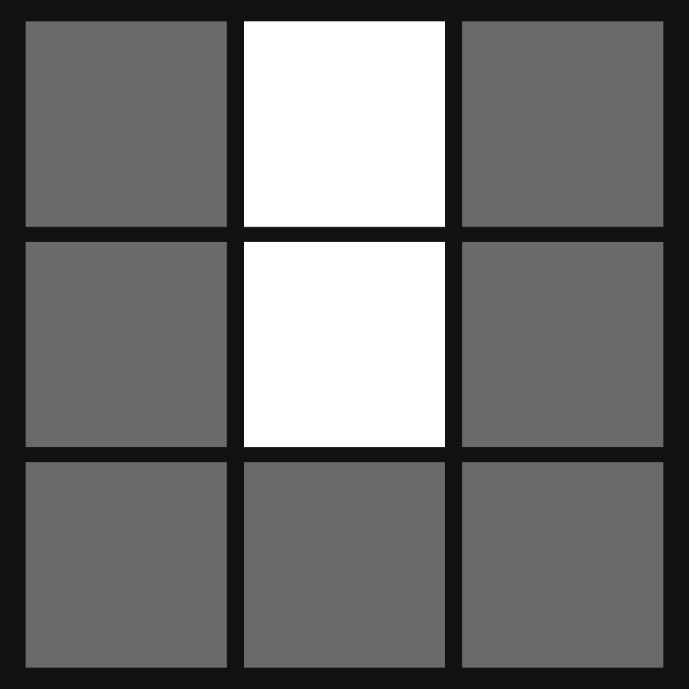
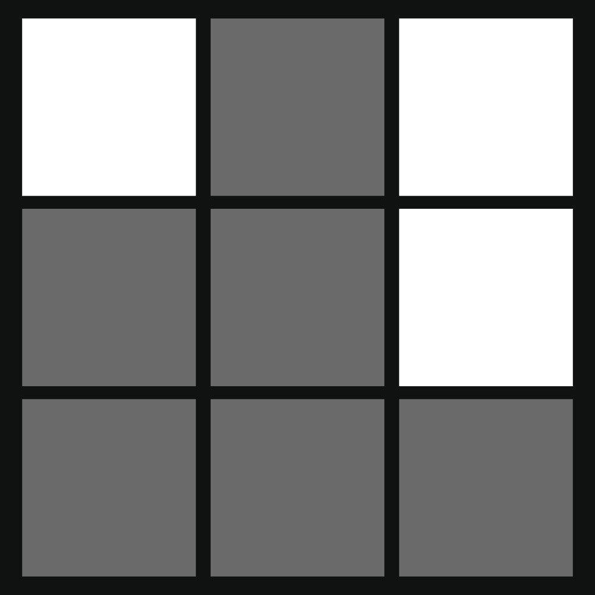
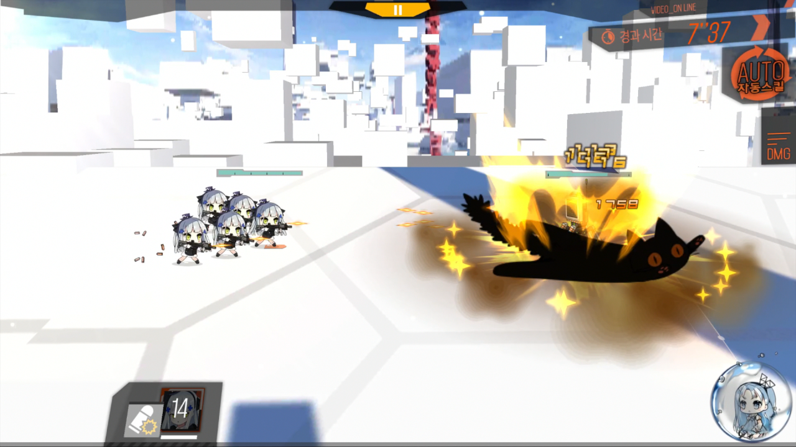
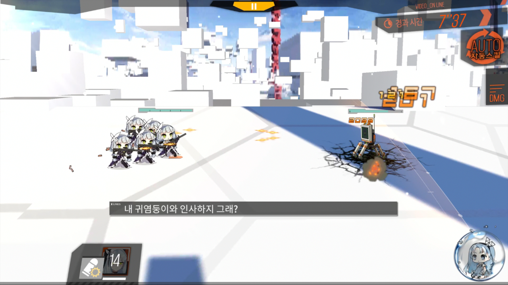

While overall performance differences between Type88's skins are clearly nothing to worry about, some concern may remain: the laser visuals of Type88's Christmas skin are obviously different, and there are some scenarios like ranking where every little bit matters. Let's look into some different cases and see if there is any situation in which there is a functional difference between skins.
Note that kiting in actual battles will leave enemies in slightly different relative positions depending on exactly when and how you move your dolls. We can only reasonably compare skins when the setup is exactly the same - at that point, an observed difference could only be because of the skin.
Basic dummy#
The Customized Target dummy provides a consistent target, but it can't be moved around much. Comparing Type88's Christmas & base skin, however, identical results can be observed:
- If you let the team walk up to the dummy normally, either skin option will miss the dummy from 5 but hit on all other positions.
- With a range extension (other doll in the front), either skin option will miss the dummy from 3 but hit on all other positions.
Video demonstration here. Note that the laser visuals remain separated from the actual hit logic - Type88's Christmas lasers are often flying completely over the dummy but still deal damage.
Real enemies#
The dummy only allows for checking 18 angles consistently - 9 positions, range extension or no extension. Let's take some real enemies and check more cases. I'll be following this procedure:
- Pick an enemy group that can be easily gotten down to a lone enemy/has little clutter.
- Block it in a consistent location (without kiting) and kill/ignore other enemies.
- Use Type88's Christmas skin, and see if she hits it from each position.
- If she does miss it from any position, check that same situation with her base skin.
- If she always hits it, note the case and move on.
| id | Remaining Enemy | Stopped by a doll on position | "Miss" positions (Xmas) | "Miss" positions (Base) |
|---|---|---|---|---|
| 950046 | Drone x1 |  |
||
| 950046 | Drone x1 |  |
 |
|
| 51 | Scout x1 | - | N/A | |
| 51 | Scout x1 | - | N/A | |
| 950031 | Manticore x2 | - | N/A | |
| 950031 | Manticore x2 | - | N/A | |
| 950034 | Hydra x4 | - | N/A | |
| 950034 | Hydra x4 | - | N/A | |
| 950026 | Gunner x2 |  |
||
| 950026 | Gunner x2 |  |
||
| 950011 | Jaeger x2 | - | N/A | |
| 950011 | Jaeger x2 | - | N/A | |
| 551 | Nemeum x1 | - | N/A | |
| 551 | Nemeum x1 | - | N/A | |
| 559 | Nemeum x1 | - | N/A | |
| 559 | Nemeum x1 | - | N/A | |
| 49 | Scarecrow x1 | |||
| 49 | Scarecrow x1 | |||
| 82 | Vespid x1 |  |
||
| 82 | Vespid x1 |  |
||
| 749 | Manticore x1 | - | N/A | |
| 749 | Manticore x1 | - | N/A |
While not all positions were able to be checked in each encounter (going to the front would often switch her to melee mode), we can see that the overall number of "miss" positions is small. We can also observe that they did not differ by skin - with almost 200 angles/positions checked!
Conclusion#
I see no evidence of a functional difference between Type88's skins. In any situation where her Christmas skin missed an enemy, she continued to miss it without. Considering the number of cases checked, I think the probability of one existing at all is slim.
Please - seek more evidence before believing a years-old KR forum post. Make sure your experiments are repeatable and conclusive. Her hitboxes are janky, but you don't have to assign that jank to random unrelated variables.
Extra: 416#
Another common claim of skin weirdness comes from 416's Children's Day skin. The usual statement is that 416's grenade impacts 1 frame earlier with that skin compared to her default. But is that really the case?
Let's look at the first frame damage numbers appear each way:


Verdict: probably also false. (Though to keep things at least a little "fun", she does resume shooting slightly faster with that skin.)